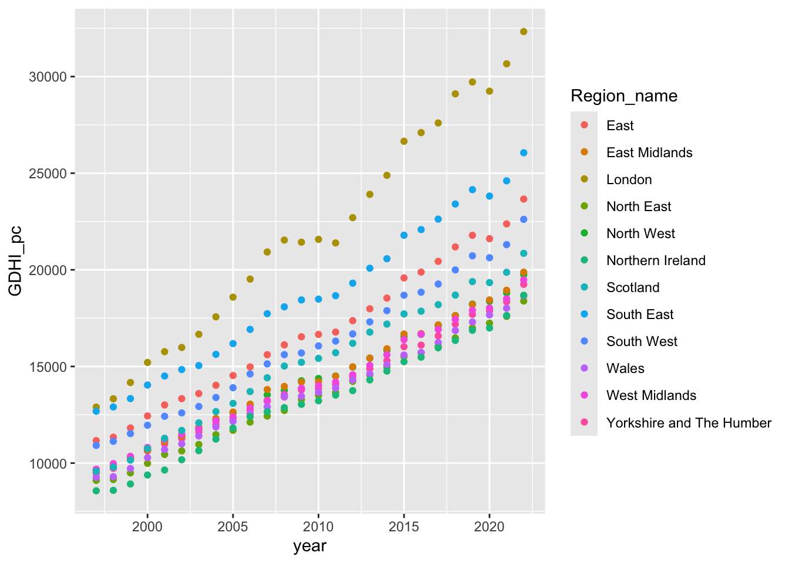
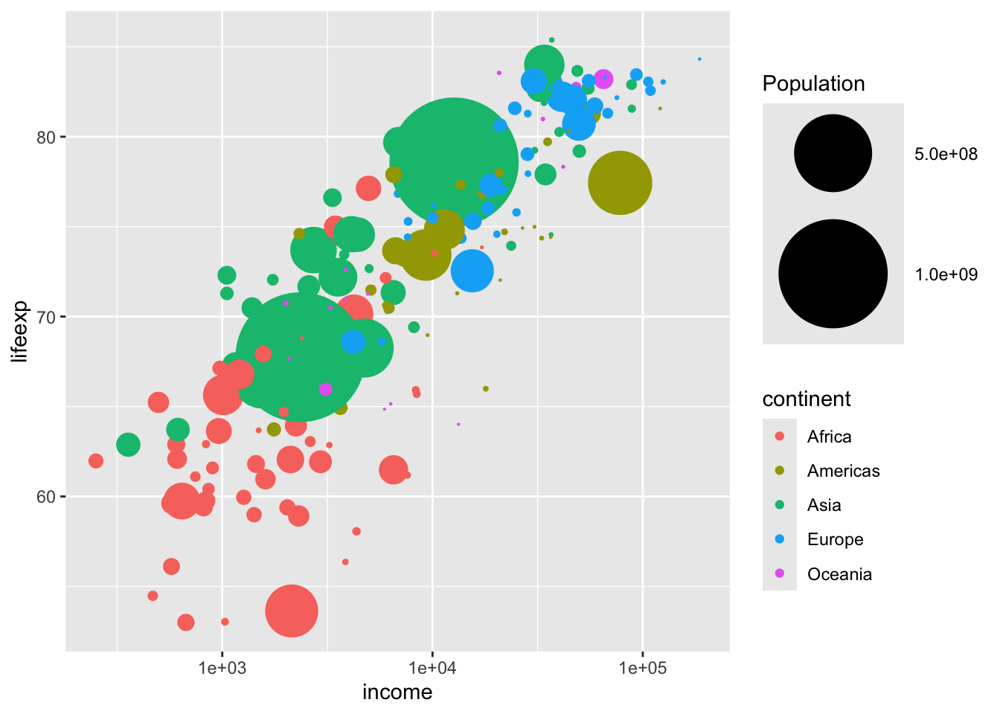
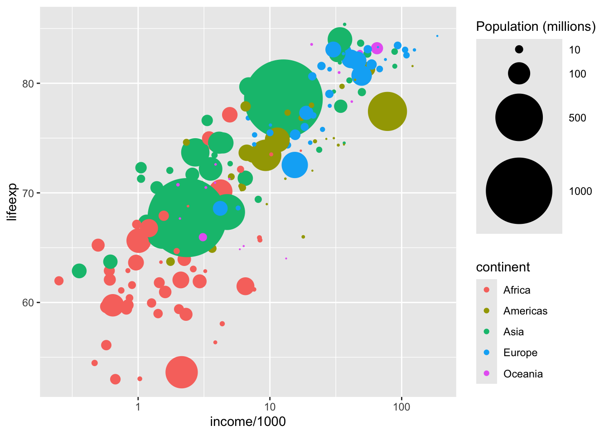
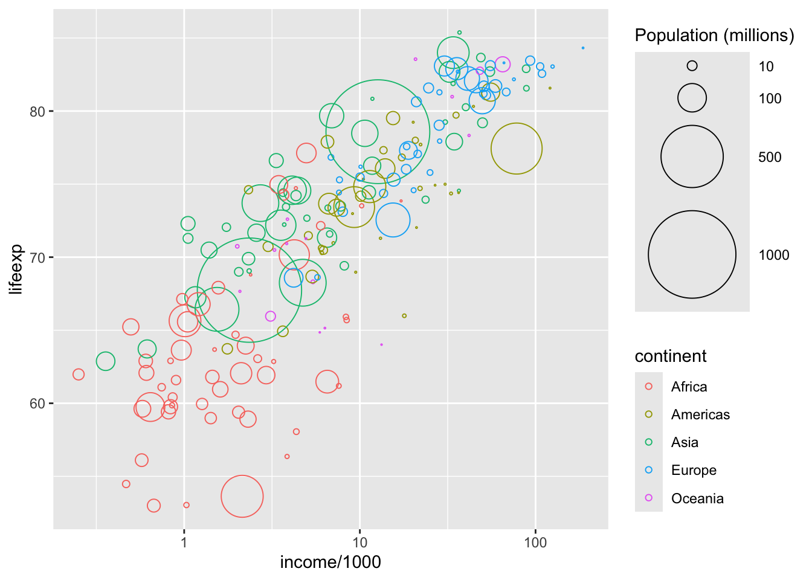
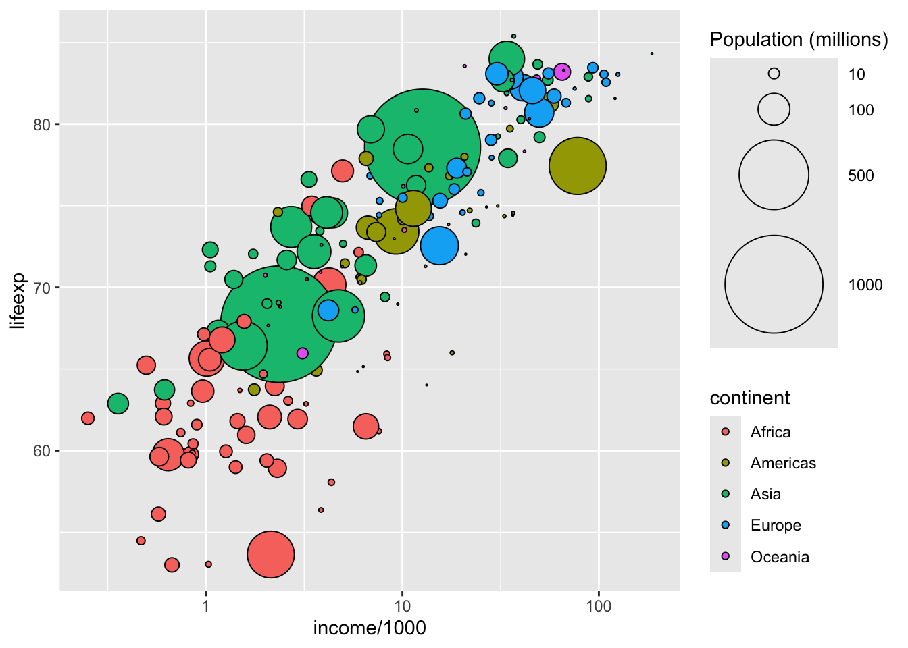

# Install the required packages
# install.packages("tidyverse")
# install.packages("gganimate")
# install.packages("gifski")9 Data Visualisation with ggplot
We will need the following packages installed for the exercises in this section. Remember to remove the # in front of the install.packages() function before running! The first package (tidyverse is a must to produce ggplots, while the last two are for animated plots.
We will then call the required libraries.
# Call the required libraries
library(tidyverse)── Attaching core tidyverse packages ──────────────────────── tidyverse 2.0.0 ──
✔ dplyr 1.1.4 ✔ readr 2.1.5
✔ forcats 1.0.0 ✔ stringr 1.5.1
✔ ggplot2 3.5.1 ✔ tibble 3.2.1
✔ lubridate 1.9.3 ✔ tidyr 1.3.1
✔ purrr 1.0.2
── Conflicts ────────────────────────────────────────── tidyverse_conflicts() ──
✖ dplyr::filter() masks stats::filter()
✖ dplyr::lag() masks stats::lag()
ℹ Use the conflicted package (<http://conflicted.r-lib.org/>) to force all conflicts to become errorslibrary(gganimate)
library(gifski)9.1 Plots with mpg data
mpg data comes with ggplot2 package. We can call it directly without the need to import once we initiate the ggplot library. You may view the contents of the data with View(mpg) or ask R to print the first few lines with head(mpg).
# View(mpg)
head(mpg)# A tibble: 6 × 11
manufacturer model displ year cyl trans drv cty hwy fl class
<chr> <chr> <dbl> <int> <int> <chr> <chr> <int> <int> <chr> <chr>
1 audi a4 1.8 1999 4 auto(l5) f 18 29 p compa…
2 audi a4 1.8 1999 4 manual(m5) f 21 29 p compa…
3 audi a4 2 2008 4 manual(m6) f 20 31 p compa…
4 audi a4 2 2008 4 auto(av) f 21 30 p compa…
5 audi a4 2.8 1999 6 auto(l5) f 16 26 p compa…
6 audi a4 2.8 1999 6 manual(m5) f 18 26 p compa…Let’s say we are interested in the relationship between displ (engine size in liters) and hwy (highway miles per gallon).
We start by creating a canvas for our plot:
# Create a canvas!
ggplot(mpg, aes(x = displ, y = hwy))
You see that the above plot is empty; we do not see much other than the axes labelled by our variable names. This is because we have not asked R to plot yet. Let us ask for a scatter plot by adding a new layer to our plot.
ggplot(mpg, aes(x = displ, y = hwy)) +
geom_point()
We see the negative relationship between engine size and the highway miles per gallon. The bigger the engine, the less fuel efficient the car is.
We may want to see this relationship represented by a line that fits best to the points in the plot. You may remember the lm() function from Session 1. We used it to estimate a linear regression (which depicts the relationship between dependent variable and independent variables). Note that we use this in the method attribute below.
# Add a regression line (a line that fits best to the points on plot)
ggplot(mpg, aes(x = displ, y = hwy)) +
geom_point() +
geom_smooth(method = "lm", se = FALSE)`geom_smooth()` using formula = 'y ~ x'In the above scatter plot, we would like to identify the type of cars. We can do this by changing the shape of the dots and assigning a different shape for each car type, or for a better looking outcome, we may do this through introducing separate colors for each car type. The class variable in the data identifies the car type.
# Differentiate data points by class using colors
ggplot(mpg, aes(x = displ, y = hwy, colour = class)) +
geom_point() 
Now, let us add out best fit line back:
# Adding a best fit line with class coloring
ggplot(mpg, aes(x = displ, y = hwy, colour = class)) +
geom_point() +
geom_smooth(method = "lm", se= FALSE)`geom_smooth()` using formula = 'y ~ x'Although we used the same geom_smooth(method = "lm", se= FALSE), this looks very much different than the line we added before! Why could that be?
Can you spot the difference between the above and below lines of code?
# Adding a best fit line for the overall group of data points
ggplot(mpg, aes(x = displ, y = hwy)) +
geom_point(aes(colour = class)) +
geom_smooth(method = "lm",se = FALSE)`geom_smooth()` using formula = 'y ~ x'In the second version, we added the aes(colour = class) option to the layer where we defined the scatter plot. Hence, the color differentiation is applied only to the points of the scatter plot whereas in the first version, the coloring is introduced in the first line, where we define the aesthetics of the whole graph. Hence, the color differentiation is applied to all added layers, including the geom_smooth().
Rather than using color differentiation, you may want to display the relationship for each car type separately. You may achieve this by faceting, where we use facet_wrap().
# Faceting
ggplot(mpg, aes(displ,hwy)) +
geom_point() +
facet_wrap(~class)
9.2 Student task: Plots with region data
Download region_data here. Rather than left-clicking on the link, right-click and choose “Download linked file” or”Save link as”.
region_data was sourced from https://ons.gov.uk/ and simplified to only contain aggregated regional data on gross disposable household income per capita for the period 1997 to 2022. Note that the data is measured in GDP at current prices.
Complete the following tasks:
- Import the dataset
- View the data
- Create a plot using the
ggplotfunction. Add theyearvariable to the x-axis andGDHI_pcon the y-axis. Use thecolor = Region_nameoption to the mapping aesthetics to illustrate regional differences by color. Select a suitable geometric object to display the data. Experiment with different options from the list below and select the one you think is most suitable:geom_areageom_linegeom_point
- Use faceting to create a plot for each region. We do not need a separate legend, so we can suppress the legend by adding the layer
themewith (legend.position = "none". - In which region(s) do you observe the largest increase in gross disposable household income per capita?
9.2.1 Guidance
We will be importing the region_data.csv.
region_data <- read.csv("data/region_data.csv")
# View(region_data)View the first few observations with head() function.
head(region_data) Region_name year GDHI_pc
1 North East 1997 9107
2 North East 1998 9150
3 North East 1999 9494
4 North East 2000 9987
5 North East 2001 10448
6 North East 2002 10631We start with a scatter plot.
# Scatter plot
ggplot(region_data, aes(x = year, y = GDHI_pc, colour = Region_name)) +
geom_point()
The line plot version is given below
# Line plot
ggplot(region_data, aes(x = year, y = GDHI_pc, colour = Region_name)) +
geom_line()Finally, the area plot
# Area plot
ggplot(region_data, aes(x = year, y = GDHI_pc, colour = Region_name)) +
geom_area()
Looking at the three plots above, geom_line is the most suitable one for our purpose.
Adding faceting will help is to see the pattern in each region more clearly.
# Line plot with faceting
ggplot(region_data, aes(x = year, y = GDHI_pc, colour = Region_name)) +
geom_line() +
facet_wrap(~Region_name) +
theme(legend.position = "none")London has experienced the largest increase in GDHI_pc. With the exception of South East, most regions have a significantly lower disposable income.
9.2.2 Exploring themes by a selected group of regions
We will be using a subsample of the above region data where there is a selection of regions: East Midlands, West Midlands, and London. Start by importing the data. You may download region_data_sel from here. Rather than left-clicking on the link, right-click and choose “Download linked file” or”Save link as”.
# Import region_data_sel
region_data_sel <- read.csv("data/region_data_sel.csv")Let us do the line plot again.
ggplot(region_data_sel, aes(x = year, y = GDHI_pc, colour = Region_name)) +
geom_line() We can use themes in R to change the look of our plot. Some of these themes are already integrated into ggplot2, while you may install some other developed by R users or organisations. For example, BBC has its own theme. Below, we re-produce the above plot by adding the theme_bw(). This theme has a white background.
ggplot(region_data_sel, aes(x = year, y = GDHI_pc, colour = Region_name)) +
geom_line() +
theme_bw()theme_dark() has a dark background.
ggplot(region_data_sel, aes(x = year, y = GDHI_pc, colour = Region_name)) +
geom_line() +
theme_dark()theme_linedraw().
ggplot(region_data_sel, aes(x = year, y = GDHI_pc, colour = Region_name)) +
geom_line() +
theme_linedraw()# BBC-style
# install.packages('devtools')
# devtools::install_github('bbc/bbplot')
#library(bbplot)
#ggplot(region_data_sel, aes(x = year, y = GDHI_pc, colour = Region_name)) +
# geom_line() +
# bbc_style()Source: https://www.bbc.co.uk/opensource/projects/project/bbplot
Which one do you prefer?
See https://ggplot2.tidyverse.org/reference/ggtheme.html for more information.
9.3 Bubble Charts
We will now follow the example from https://data.europa.eu/apps/data-visualisation-guide/grammar-of-graphics-in-practice-ggplot2, with more recent data from the World Bank, World Development Indicators Database.
Import the bubble.chart.data. This data provides information on life expectancy, income, and population in 197 countries, as well as a variable on the continent they are located.
You may download the bubble.chart.data here. Rather than left-clicking on the link, right-click and choose “Download linked file” or”Save link as”.
# Import bubble.chart.data
bubble.chart.data <- read.csv("data/bubble.chart.data.csv")Let’s observe the relationship between life expectancy and income.
# Scatterplot of life expectancy and income
ggplot(data = bubble.chart.data, aes(x = income, y = lifeexp)) +
geom_point()We would like to see how countries from different continents are positioned in the above plot. We will do this through color differentiating the data points. But also, we will change the size of the points to reflect the population of each country plotted.
# Add coloring by continent and change size of points using population
ggplot(data = bubble.chart.data, aes(x = income, y = lifeexp,
size = population, colour = continent)) +
geom_point()We observe above that life expectancy in African countries is the lowest while European countries rank among the highest. But it is difficult to get much information from the above plot because of the highly skewed distribution of income. Only a few countries income higher than 50,000 while most countries are much below that. We may also observe this through a histogram of income.
ggplot(data = bubble.chart.data, aes(x = income)) +
geom_histogram(fill = "skyblue", color = "black")`stat_bin()` using `bins = 30`. Pick better value with `binwidth`.To make this distribution less skewed, we may take the logarithm of income. This will reduce the wide gaps at the higher ends of the distribution, which will help us to better observe the data points at the lower end.
ggplot(data = bubble.chart.data, aes(x = log(income))) +
geom_histogram(fill = "skyblue", color = "black")`stat_bin()` using `bins = 30`. Pick better value with `binwidth`.Now, let’s apply this to our bubble chart and ask ggplot to change the scale of the x-axis. It will give is a logarithmic scale.
ggplot(data = bubble.chart.data, aes(x = income, y = lifeexp,
size = population, colour = continent)) +
geom_point() +
scale_x_log10()Much better! However, at the moment, the size of each data point is allocated to an ordinal scale, which only shows us which countries are large and which are small; it does not reflect the actual magnitude of the population size differences. We will change this (the size based on population) to be a continuous scale. While doing that, we will also set a maximum size so that we do not lose clarity with too large bubbles.
# Add accurate re-sizing of points using population
ggplot(data = bubble.chart.data, aes(x = income, y = lifeexp,
size = population, colour = continent)) +
geom_point() +
scale_x_log10() +
scale_size_area(max_size = 30, name = "Population")
We try to avoid scientific representation of numbers (like the legend for population above) so, we will change the units of measurement: we will measure population in millions of people and income in thousands. Also, we will assign some more intuitave breaks on the x-axis.
# Add legends
ggplot(data = bubble.chart.data, mapping = aes(
x = income/1000,
y = lifeexp,
size = population/1000000,
colour = continent)) +
geom_point() +
scale_x_log10() +
scale_size_area(
max_size = 30,
name = "Population (millions)",
breaks = c(10, 100, 500, 1000))
There are a lot of overlaps between circles. We would like be able to better differentiate them. We will use shape 21 for adding a full circle around our data points. See https://ggplot2.tidyverse.org/articles/ggplot2-specs.html#sec:shape-spec for different shape values.
# Add border to circles
ggplot(data = bubble.chart.data, mapping = aes(
x = income/1000,
y = lifeexp,
size = population/1000000,
color = continent)) +
geom_point(shape = 21) +
scale_x_log10() +
scale_size_area(
max_size = 30,
name = "Population (millions)",
breaks = c(10, 100, 500, 1000))
Now, we have the bubbles but we would like them to be colour-filled. We will change the color = continent option above to fill = continent
ggplot(data = bubble.chart.data, mapping = aes(
x = income/1000,
y = lifeexp,
size = population/1000000,
fill = continent)) +
geom_point(shape = 21) +
scale_x_log10() +
scale_size_area(
max_size = 30,
name = "Population (millions)",
breaks = c(10, 100, 500, 1000))
We my add custom colors to our plot
# Add custom colors for circles
ggplot(data = bubble.chart.data, mapping = aes(
x = income/1000,
y = lifeexp,
size = population/1000000,
fill = continent)) +
geom_point(shape = 21) +
scale_x_log10() +
scale_size_area(
max_size = 30,
name = "Population (millions)",
breaks = c(10, 100, 500, 1000)) +
scale_fill_manual(
values = c("#FF265C", "#FFE700", "#4ED7E9", "#70ED02", "purple"),
name = "Continent")Looking much nicer! But it would help to remove the gray color at the background. There is no purpose of coloring at the background.
# Change plot theme to minimal to remove background color
ggplot(data = bubble.chart.data, mapping = aes(
x = income/1000,
y = lifeexp,
size = population/1000000,
fill = continent)) +
geom_point(shape = 21) +
scale_x_log10() +
scale_size_area(
max_size = 30,
name = "Population (millions)",
breaks = c(10, 100, 500, 1000)) +
scale_fill_manual(
values = c("#FF265C", "#FFE700", "#4ED7E9", "#70ED02", "purple"),
name = "Continent") +
theme_minimal()It is now easier on the eye.
Finally, add title and axis labels below
# Add title and label axes
ggplot(data = bubble.chart.data, mapping = aes(
x = income/1000,
y = lifeexp,
size = population/1000000,
fill = continent)) +
geom_point(shape = 21) +
scale_x_log10() +
scale_size_area(
max_size = 30,
name = "Population (millions)",
breaks = c(10, 100, 500, 1000)) +
scale_fill_manual(
values = c("#FF265C", "#FFE700", "#4ED7E9", "#70ED02", "purple"),
name = "Continent") +
theme_minimal() +
labs(x ="Income (GDP/capita, in thousands of US dollars)",
y ="Life expectancy (years)", title = "Strong correlation between economic development and life expectancy" ) 9.4 Animated Plots
We need the gganimate and gifski for the animated plots. We installed and loaded these packages at the very top of this worksheet.
Load the data first. You may download the animate.csv data from here. Rather than left-clicking on the link, right-click and choose “Download linked file” or”Save link as”.
animate_data <- read.csv("data/animate.csv")We will copy the last command from above and introduce some changes:
Save the plot object under name
padd
transition_time()layer to create plots for each year (to be combined in our gif image after)add
panel.grid.minor = element_blank()totheme()add
title = "Year: {frame_time}"tolabs
p <- ggplot(data = animate_data, mapping = aes(
x = income/1000,
y = lifeexp,
size = population/1000000,
fill = continent)) +
geom_point(shape = 21) +
scale_x_log10() +
scale_size_area(
max_size = 30,
name = "Population (millions)",
breaks = c(10, 100, 500, 1000)) +
scale_fill_manual(
values = c("#FF265C", "#FFE700", "#4ED7E9", "#70ED02", "purple"),
name = "Continent") +
theme_minimal() +
theme(panel.grid.minor = element_blank(),
legend.position = "none") +
labs(title = "Year: {frame_time}",
x = "Income (GDP/capita, PPP (constant 2021 international $))",
y = "Life expectancy (years)") +
transition_time(year)Render the plot object p
# render plot
#p_anim <- animate(p, renderer = gifski_renderer())Save the animated plot
# save animated plot
#anim_save("my_animation.gif", animation = p_anim)